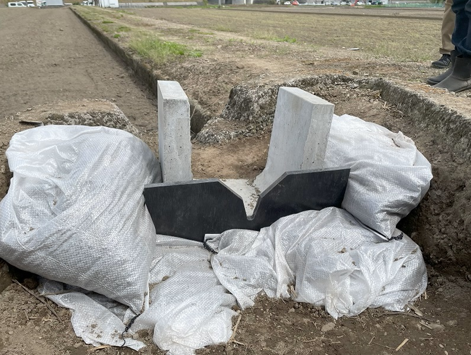
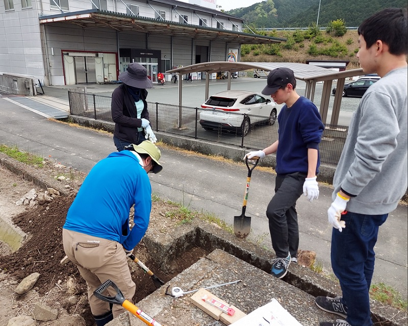

mizukan
イベント
田んぼダムのためのせき板設置
４月21日、西予市宇和高校の田んぼにて「田んぼダム」
の実装に必要な、せき板の設置作業を行いました!

＊田んぼダムとは、せき板などを水田の排水口にとりつけて
流出量を抑えることで、水田の雨水貯留機能の強化を図り、
下流域の浸水被害リスクの低減を図る取組です.

せき板を固定するためにスコップで土を掘ったり,
土のうを作ったりするなどしました．
大変な作業でしたが，自分の手を動かしてモノづくりを行う
という土木の楽しさを学ぶことができました!(^^)!
文責 花本